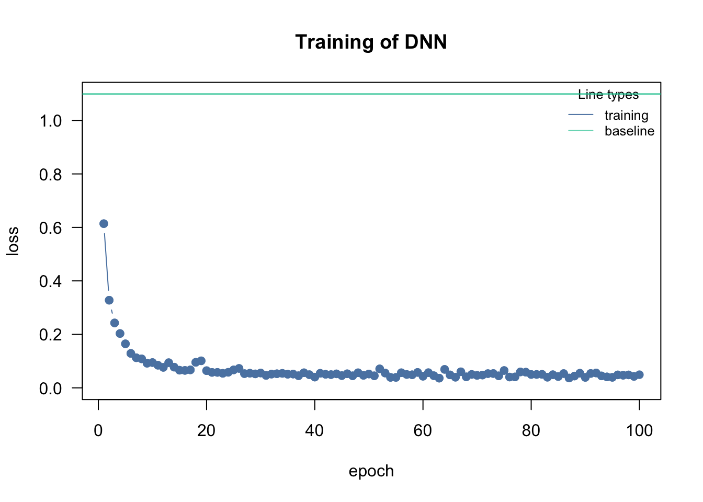

Go through the 4(5) unsupervised algorithms from the supervised chapter Section 2.2, and check
if they are sensitive (i.e. if results change)
if you scale the input features (= predictors), instead of using the raw data.
Discuss in your group: Which is more appropriate for this analysis and/or in general: Scaling or not scaling?
library(dendextend)methods =c("ward.D", "single", "complete", "average","mcquitty", "median", "centroid", "ward.D2")cluster_all_methods =function(distances){ out =dendlist()for(method in methods){ res =hclust(distances, method = method) out =dendlist(out, as.dendrogram(res)) }names(out) = methodsreturn(out)}get_ordered_3_clusters =function(dend){return(cutree(dend, k =3)[order.dendrogram(dend)])}compare_clusters_to_iris =function(clus){return(FM_index(clus, rep(1:3, each =50), assume_sorted_vectors =TRUE))}do_clustering =function(traits, scale =FALSE){set.seed(123) headline ="Performance of linkage methods\nin detecting the 3 species\n"if(scale){ traits =scale(traits) # Do scaling on copy of traits. headline =paste0(headline, "Scaled") }else{ headline =paste0(headline, "Not scaled") } distances =dist(traits) out =cluster_all_methods(distances) dend_3_clusters =lapply(out, get_ordered_3_clusters) clusters_performance =sapply(dend_3_clusters, compare_clusters_to_iris)dotchart(sort(clusters_performance), xlim =c(0.3,1),xlab ="Fowlkes-Mallows index",main = headline,pch =19)}traits =as.matrix(iris[,1:4])# Do clustering on unscaled data.do_clustering(traits, FALSE)
# Do clustering on scaled data.do_clustering(traits, TRUE)
It seems that scaling is harmful for hierarchical clustering. But this might be a deception. Be careful: If you have data on different units or magnitudes, scaling is definitely useful! Otherwise variables with higher values get higher influence.
do_clustering =function(traits, scale =FALSE){set.seed(123)if(scale){ traits =scale(traits) # Do scaling on copy of traits. headline ="K-means Clustering\nScaled\nSum of all tries: " }else{ headline ="K-means Clustering\nNot scaled\nSum of all tries: " } getSumSq =function(k){ kmeans(traits, k, nstart =25)$tot.withinss } iris.kmeans1to10 =sapply(1:10, getSumSq) headline =paste0(headline, round(sum(iris.kmeans1to10), 2))plot(1:10, iris.kmeans1to10, type ="b", pch =19, frame =FALSE,main = headline,xlab ="Number of clusters K",ylab ="Total within-clusters sum of squares",col =c("black", "red", rep("black", 8)) )}traits =as.matrix(iris[,1:4])# Do clustering on unscaled data.do_clustering(traits, FALSE)
# Do clustering on scaled data.do_clustering(traits, TRUE)
It seems that scaling is harmful for K-means clustering. But this might be a deception. Be careful: If you have data on different units or magnitudes, scaling is definitely useful! Otherwise variables with higher values get higher influence.
library(dbscan)correct =as.factor(iris[,5])# Start at 1. Noise points will get 0 later.levels(correct) =1:length(levels(correct))correct
It seems that scaling is harmful for density based clustering. But this might be a deception. Be careful: If you have data on different units or magnitudes, scaling is definitely useful! Otherwise variables with higher values get higher influence.
library(mclust)do_clustering =function(traits, scale =FALSE){set.seed(123)if(scale){ traits =scale(traits) } # Do scaling on copy of traits. mb3 =Mclust(traits, 3) tbl =table(iris$Species, mb3$classification)cat( if(scale){ "Scaled" }else{ "Not scaled" }, "\n\n" )cat("Confusion matrix:\n")print(tbl)cat("\nCorrect classified points: ", sum(diag(tbl)), " / ", length(iris[,5]))}traits =as.matrix(iris[,1:4])# Do clustering on unscaled data.do_clustering(traits, FALSE)
For model based clustering, scaling does not matter.
traits =as.matrix(iris[,1:4])biplot(prcomp(traits, center =TRUE, scale. =TRUE),main ="Use integrated scaling")
biplot(prcomp(scale(traits), center =FALSE, scale. =FALSE),main ="Scale explicitly")
biplot(prcomp(traits, center =FALSE, scale. =FALSE),main ="No scaling at all")
For PCA ordination, scaling matters. Because we are interested in directions of maximal variance, all parameters should be scaled, or the one with the highest values might dominate all others.
Exercise - Supervised Learning
Using a random forest on the iris dataset, which parameter would be more important (remember there is a function to check this) to predict Petal.Width?
Task: First deep neural network
Deep neural networks are currently the state of the art in unsupervised learning. Their ability to model different types of data (e.g. graphs, images) is one of the reasons for their rise in recent years. However, their use beyond tabular data (tabular data == features have specific meanings) requires extensive (programming) knowledge of the underlying deep learning frameworks (e.g. TensorFlow or PyTorch), which we will teach you in two days. For tabular data, we can use packages like cito, which work similarly to regression functions like lm and allow us to train deep neural networks in one line of code.
A demonstration with the iris dataset:
library(cito)# always scale your features when using DNNsiris_scaled = irisiris_scaled[,1:4] =scale(iris_scaled[,1:4])# the default architecture is 3 hidden layers, each with 10 hidden nodes (we will talk on Wednesday more about the architecture)# Similar to a lm/glm we have to specify the response/loss family, for multi-target (3 species) we use the softmax loss functionmodel =dnn(Species~., lr =0.1,data = iris_scaled, loss ="softmax", verbose =FALSE)

DNNs are not interpretable, i.e. no coefficients (slopes) that tell us how the features affect the response, however, similar to the RF, we can calculate a ‘variable importance’ which is similar to an anova: